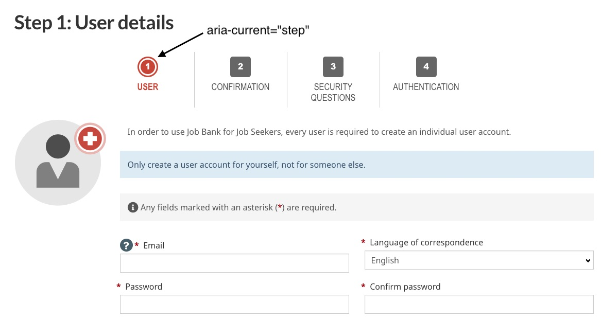
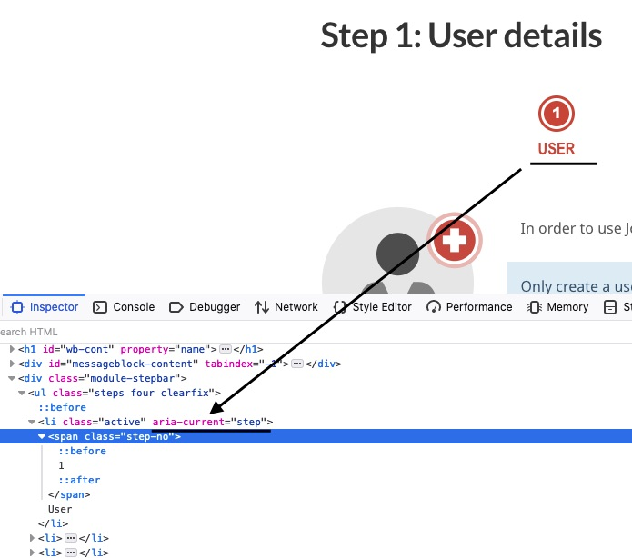

This tutorial is a basic intro to WAI-ARIA:
This tutorial uses RevealJS. It uses the Reveal Zoom plugin, which allows you to zoom in on elements with Alt+click (Ctrl+click on Linux). I also had to do some of my own hacking to allow you to zoom in with Ctrl++ and scroll on images.
Oh, and all images can be opened in another window or tab by clicking on them.
Think of ARIA as a loaded nail gun:
<button> with any other HTML element)ARIA makes HTML accessible.
HTML is already accessible - when used properly. ARIA helps in areas where there is no equivalent HTML, or the HTML is not yet widely supported in browsers.
ARIA is replacing HTML.
HTML is here to stay.
Adding ARIA to your site makes it accessible.
Adding ARIA to your site - done properly - can enhance its accessibility. Done improperly can make it much worse.
Roles, States, and Properties.
role attribute.For example: <a href="abc.html" role="button">Some text</a> will still look like a link, but to users of AT, it will effectively be a button, and they will expect that the space bar will activate it.
Simply adding the role attribute won't change the functionality. You need to update that with Javascript.
Ensure that the click event is fired on keypress when Enter is pressed, and on keyup when the space bar is pressed.
Wouldn't it just be easier to use a <button>?
aria-*.For example: <input ... aria-describedby="xyzElement">.
aria-*.For example: <p aria-hidden="true">This text is not available to the accessibility tree.</p>
From Using ARIA (W3C):
role="presentation" or aria-hidden="true" on a focusable element.Not including landmark roles.
role="none" / role="presentation"removes semantic meaning from the element, and all child elements depending on this element. (Ex: adding role="none" to a <table> also removes the roles of its <tr> and <td> elements, but not any <button> descendant elements.)
role="application"A structure containing one or more focusable elements requiring user input, such as keyboard or gesture events, that do not follow a standard interaction pattern supported by a widget role.
role="document"role="application" where keystrokes are passed to the browser to be handled by Javascript.tabindex="0" to accept focus.role="heading"<H#> heading.aria-level="x" where 1 <= x <= 8.<div role="heading" aria-level="2"> is equivalent to <h2>.role="group"<fieldset>.aria-label or aria-labelledby for the <legend>Example:
<div role="group" aria-labelledby="groupLbl">
<h2 id="groupLbl">Contact Info</h2>
<label for="name">Name:</label>
<input id="name">
...
</div>
role="list"list-style: none;, VoiceOver will not treat it as a list, unless role="list" is in the list element.role="link"role="img"aria-label, aria-labelledby, or other accessible name waysrole="button"keypress with the Enter key, and on keyup for the spacebar
role="switch"aria-label="accessible name here"<div> or <span>)In the following code example, the link text (ie: it's Accessible Name) is "The Nordburg Website".
Nordburg Homepagearia-labelledby="a space-delimited list of IDs of HTML elements on the page"In the following code example, the Accessible Name for the input is "Contact Information First Name".
<h2 id="contactInfo">Contact Information</h2>
<h3 id="fName">First Name</h3>
<input id="fname" aria-labelledby="contactInfo fName">
aria-label and aria-labelledbyaria-label or aria-labelledby, then the ARIA-defined accessible name takes precedence.aria-labelledby takes precedence over aria-labelIn the following code example, the Accessible Name for the input is "First Name".
<h3 id="yourName">Your Name</h3>
<label for="fname">First Name</label>
<input id="fname">
In the following code example, the Accessible Name for the input is "Given Name".
<h3 id="yourName">Your Name</h3>
<label for="fname">First Name</label>
<input id="fname" aria-label="Given Name">
In the following code example, the Accessible Name for the input is "Your Name".
<h3 id="yourName">Your Name</h3>
<label for="fname">First Name</label>
<input id="fname" aria-label="Given name" aria-labelledby="yourName">
aria-describedby="a space-delimited list of IDs of HTML elements on the page"aria-level="x"role="heading".role="row" in a role="treegrid".aria-haspopup="false|true|menu|listbox|tree|grid|dialog"aria-haspopup="true" == aria-haspopup="menu"aria-expanded="true|false"aria-expanded attribute needs to be on the element that controls the expansion/collapsion, not the element that expands/collapses.aria-hidden="true|false"<svg> when either the alternate text is irrelevant (ie: a decorative image) or the alternate text is already given elsewhere.aria-current="false|true|page|step|location|date|time"used when an element within a set of related elements is visually styled to indicate it is the current item in the set.
"false" indicates the thing is not the current item in a set."true" indicates the thing is the current item in a set."page" used in a list of links tells the Screen Reader that the current page is the one you're on. (ex: "<a href="thisPage.html" aria-current="page">.)"step" when a list of steps in a process is shown, and you're on a current step."location" used in an environment or context, like in a flow chart"date" used in a collection of dates"time" used in a collection of timesFrom the Canada Job Bank user registration process:
From the Canada Job Bank user registration process:
aria-pressed="true|false|mixed""mixed" is for when the toggle changes the value of more than one thing which may have different values| HTML | Role equivalent |
|---|---|
<header> |
role="banner" |
<main> |
role="main" |
<footer> |
role="contentinfo" |
<nav> |
role="navigation" |
<aside> |
role="complementary" |
<section> |
role="region" |
<form> |
role="form" |
| (none) | role="search" |
role, or aria-live attributerole overrides the inherent role of its element.<h2 role="status"> is no longer a level 2 heading. It's a status message.aria-live should be used instead of a live role.aria-live valuesaria-live can be "polite", "assertive", or "off"role="status|alert|log|progressbar|marquee|timer"role attribute has to be on the element before the text content is changed.role="progressbar|marquee|timer"role="alert|status|log" is mostly supported (Accessibility Support)aria-atomic="true|false" tells a screen reader to either just read out any changes, or read the entire live region when a change occurs. (The default is false)aria-relevant="additions|removals|text|all". (The default is text.)aria-busy="true" so as the live region is changing, then set it to aria-busy="false" so screen readers won't read out changes until all changes are made.On your site template, have a <div> at the bottom of the DOM that's hidden from screen readers and use Javascript to update content whenever you need to.
Example:
...
</footer>
<div class="sr-only" aria-live="polite" id="msgCentre"></div>
</body>
</html>
function liveMsg ($msg) {
let $msgCentre = getElementById("msgCentre");
$msgCentre.textContent = $msg;
} // End of liveMsg
There are lots, but here are some common ones for which HTML counterparts don't exist:
role="tabpanel" and they're selected with interactive elements designated with role="tab" which are listed in something designated with role="tablist".A menu is often a list of common actions or functions that the user can invoke. The menu role is appropriate when a list of menu items is presented in a manner similar to a menu on a desktop application.
a collection of one or more rows with one or more cells where some or all cells in the grid are focusable by using methods of two-dimensional navigation, such as directional arrow keys.
<table>, but doesn't have to be. It is based on the concept of a <table>role="grid" have descendant elements with role="row" or role="rowgroup".role="gridcell|rowheader|columnheader" must have an ancestor element with role="row".role attributes in the <tr> and <td> elements. That's because they have the correct implicit roles.A widget that allows the user to select one or more items from a hierarchically organized collection.
role="treeitem". The tree "root" has role="tree".aria-expanded="true"). Else, it's a "Closed Node" (with aria-expanded="false").role="group"s on the inner <ul>s rather than an inner role="tree".A dialog is a descendant window of the primary window of a web application. For HTML pages, the primary application window is the entire web document, i.e., the body element.
<dialog> element has gained wide support. But you may still see ARIA diaglog widgets around.aria-label or aria-labelledby.role="dialog" also has aria-modal="true", that tells AT that everything else should be ignored. This is very bad if the rest is still in the focus order.aria-modal="true" replaces the old method of setting the non-dialog parts of the page to aria-hidden="true". In those pages, the dialog shouldn't be a descendant of any element with aria-hidden="true"